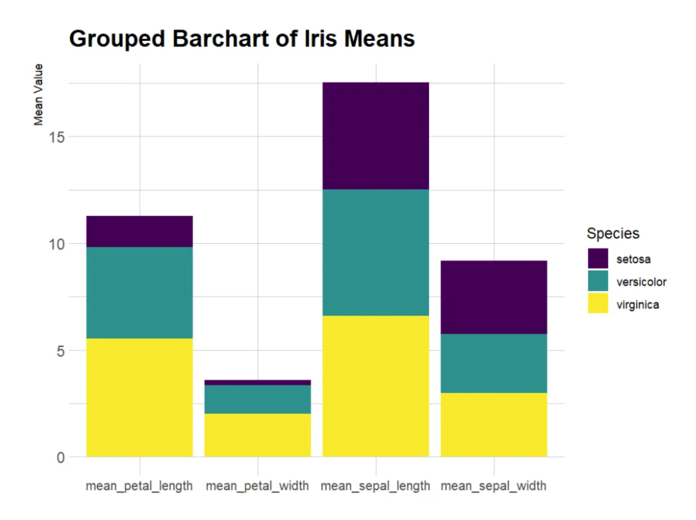
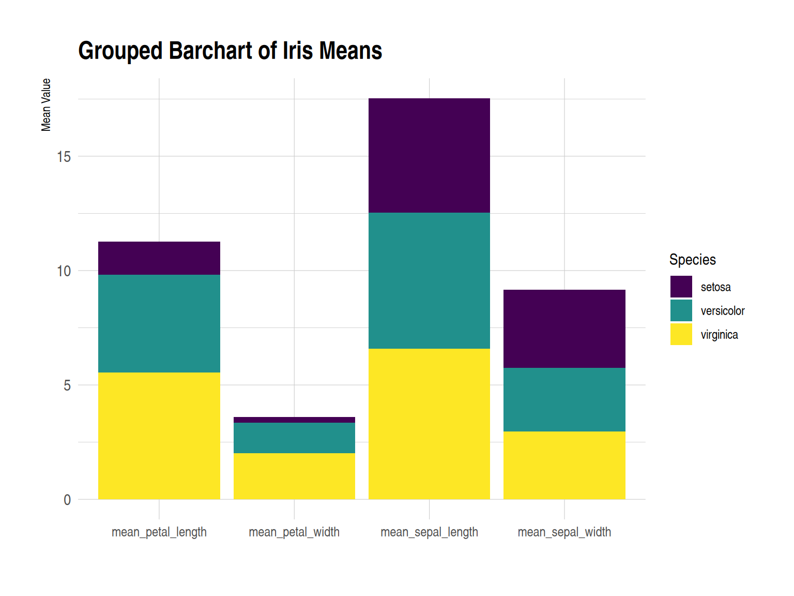
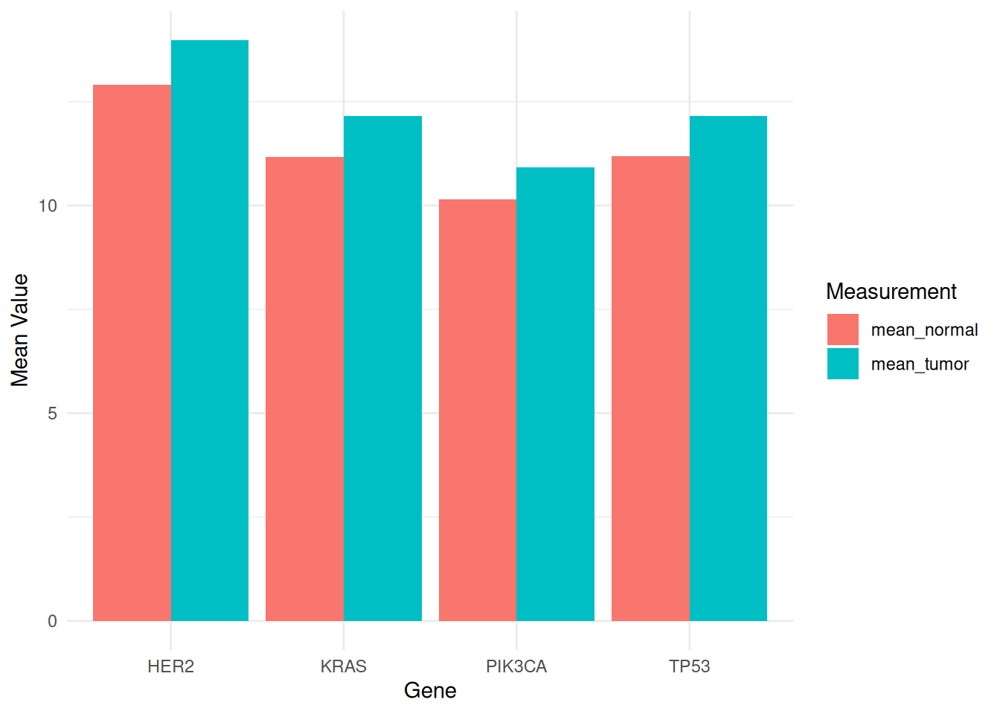
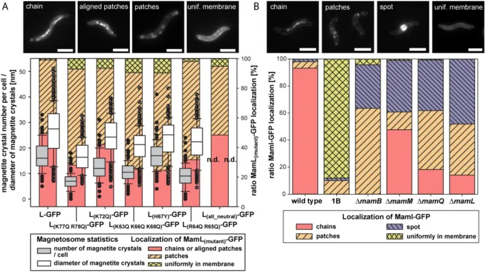
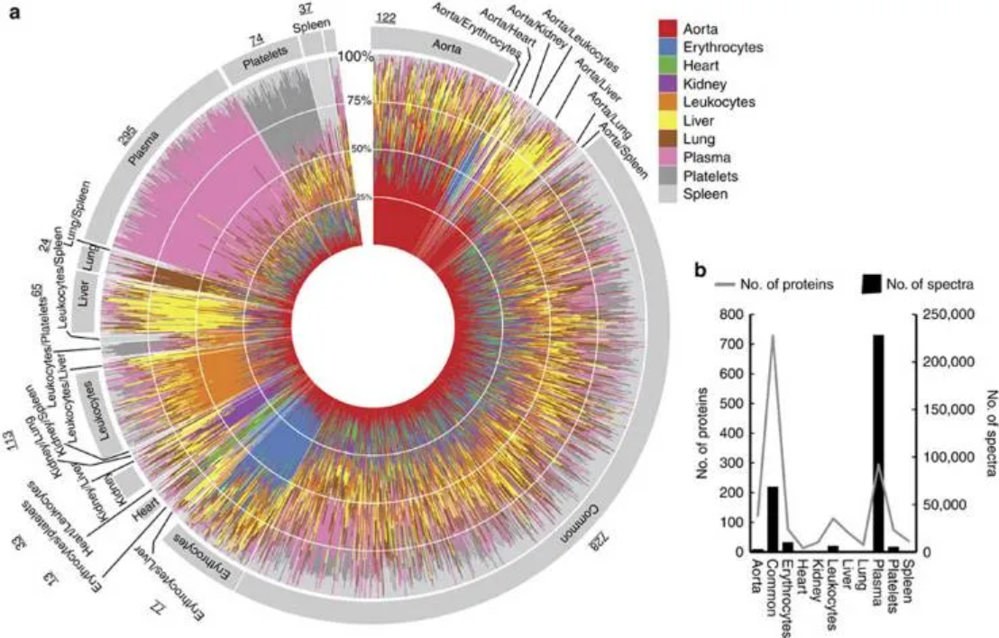

# 安装包
if (!requireNamespace("ggplot2", quietly = TRUE)) {
install.packages("ggplot2")
}
if (!requireNamespace("hrbrthemes", quietly = TRUE)) {
install.packages("hrbrthemes")
}
if (!requireNamespace("viridis", quietly = TRUE)) {
install.packages("viridis")
}
if (!requireNamespace("dplyr", quietly = TRUE)) {
install.packages("dplyr")
}
if (!requireNamespace("tidyr", quietly = TRUE)) {
install.packages("tidyr")
}
if (!requireNamespace("tibble", quietly = TRUE)) {
install.packages("tibble")
}
if (!requireNamespace("RColorBrewer", quietly = TRUE)) {
install.packages("RColorBrewer")
}
if (!requireNamespace("streamgraph", quietly = TRUE)) {
install.packages("streamgraph")
}
# 加载包
library(ggplot2)
library(hrbrthemes)
library(viridis)
library(dplyr)
library(tidyr)
library(tibble)
library(RColorBrewer)
library(streamgraph)分组和堆叠条形图
分组条形图或聚类条形图用于将单变量或单类别条形图的功能扩展到多变量条形图。在这些图中，条形图根据其类别被分组，颜色是代表其他分类变量的区别因素。条形图被定位为迎合一个组或主要组，颜色代表次要类别。分组条形图特别适合用于显示多组分类数据在不同变量上的分布情况，有助于观察和比较不同分类变量在不同测量项目上的差异。
示例
分组条形图

这个图是一个分组柱形图（grouped bar chart），用于展示 iris 数据集中的三种鸢尾花（setosa、versicolor、virginica）在四个不同测量指标上的平均值（即花萼长度、花萼宽度、花瓣长度和花瓣宽度）。x 轴表示测量的四个项目，y 轴（Mean Value）表示这些测量项目的平均值。不同颜色的柱子（Species）：代表三种鸢尾花的种类，分别是 setosa（红色）、versicolor（绿色）和 virginica（蓝色）。每个测量项目下，三种花的平均值以并排柱状图的形式显示。
堆叠条形图

这个图是一个堆叠柱形图（stacked bar chart），展示了 iris 数据集中三种鸢尾花（setosa、versicolor、virginica）在四个不同测量指标上的平均值。柱子堆叠在一起，因此看到的总高度是三个物种的平均值之和。x 轴（Measurement）：和上个图一样，表示四个测量项目（花萼长度、花萼宽度、花瓣长度和花瓣宽度）。y 轴（Mean Value）：表示这些测量项目的总平均值（所有物种的均值堆叠起来）。不同颜色代表三种鸢尾花的不同种类，分别是 setosa（红色）、versicolor（绿色）和 virginica（蓝色）。每个测量项目的总柱高表示三个物种的总均值，而柱子内的不同颜色代表每个物种在该测量项目中的贡献值。
环境配置
系统要求： 跨平台（Linux/MacOS/Windows）
编程语言：R
依赖包：
ggplot2;hrbrthemes;viridis;dplyr;tidyr;tibble;RColorBrewer;streamgraph
数据准备
使用R自带数据集iris和UCSC Xena网站(UCSC Xena (xenabrowser.net))的TCGA-CHOL.methylation450.tsv。
# iris
iris_means <- iris %>%
group_by(Species) %>%
summarise(
mean_sepal_length = mean(Sepal.Length),
mean_sepal_width = mean(Sepal.Width),
mean_petal_length = mean(Petal.Length),
mean_petal_width = mean(Petal.Width)
) # 计算每个物种四列的均值
iris_means_long <- iris_means %>%
pivot_longer(
cols = starts_with("mean"),
names_to = "Measurement",
values_to = "Value"
)
iris_means_df <- as.data.frame(iris_means) %>%
column_to_rownames(var = "Species")
iris_matrix <- as.matrix(iris_means_df)
iris_percentage <- apply(iris_matrix, 2, function(x) { x * 100 / sum(x, na.rm = TRUE) })
# TCGA-CHOL.methylation450
TCGA_methylation <- readr::read_tsv("https://bizard-1301043367.cos.ap-guangzhou.myqcloud.com/TCGA-CHOL.methylation450_.tsv")
methylation_subset <- TCGA_methylation[c(5:9),c(4:13)]
methylation_subset <- as.data.frame(methylation_subset)
rownames(methylation_subset) <- c("cg236", "cg289", "cg292", "cg321", "cg363")
colnames(methylation_subset) <- substr(colnames(methylation_subset), 9, 12)
methylation_long <- methylation_subset %>%
rownames_to_column(var = "Composite") %>%
pivot_longer(cols = -Composite, names_to = "sample", values_to = "value")
methylation_long$sample <- as.numeric(factor(methylation_long$sample, levels = unique(methylation_long$sample))) # 将sample列转换为有序数值
# TCGA-STAD.star_counts
TCGA_star <- readr::read_tsv("https://bizard-1301043367.cos.ap-guangzhou.myqcloud.com/TCGA-STAD.star_counts.tsv")
selected_rows <- TCGA_star[TCGA_star$Ensembl_ID %in% c("ENSG00000141510.18",
"ENSG00000141736.14",
"ENSG00000121879.6",
"ENSG00000133703.13"), ]
selected_rows <- as.data.frame(selected_rows)
rownames(selected_rows) <- c("PIK3CA", "KRAS", "TP53", "HER2")
selected_counts <- selected_rows[,-1]
tumor_counts <- selected_counts %>% select(ends_with("01A"))
normal_counts <- selected_counts %>% select(ends_with("11A"))
mean_tumor <- rowMeans(tumor_counts, na.rm = TRUE)
mean_normal <- rowMeans(normal_counts, na.rm = TRUE)
mean_values <- data.frame(mean_tumor, mean_normal)
mean_expression_long <- mean_values %>%
rownames_to_column("Gene") %>%
pivot_longer(cols = -Gene,
names_to = "Measurement",
values_to = "Mean_Value")可视化
1. ggplot2（使用iris数据）
ggplot2包可能是构建分组和堆叠条形图的最佳选择。输入数据框需要有 2 个分类变量，这些变量将传递给aes()函数的 x 和 fill 参数。由于 position 参数，从分组切换到堆叠非常容易。
1.1 分组条形图
# 分组条形图
p <- ggplot(iris_means_long, aes(fill = Species, y = Value, x = Measurement)) +
geom_bar(position = "dodge", stat = "identity") +
scale_fill_manual(values = c("#4A8CC3", "#E37939", "#8FBC89")) +
labs(x = "Measurement",
y = "Mean Value") +
theme_minimal()
p
此分组柱形图（grouped bar chart），用于展示 iris 数据集中的三种鸢尾花（setosa、versicolor、virginica）在四个不同测量指标上的平均值（即花萼长度、花萼宽度、花瓣长度和花瓣宽度）。每个测量项目下，三种花的平均值以并排柱状图的形式显示。
1.2 堆叠条形图
堆叠条形图与分组条形图非常相似。但是堆叠条形图的子组彼此叠在一起显示，而不是并排显示。将分组条形图的position参数改为stack即可获得堆叠条形图。
# 堆叠条形图
p <- ggplot(iris_means_long, aes(fill = Species, y = Value, x = Measurement)) +
geom_bar(position = "stack", stat = "identity") +
scale_fill_manual(values = c("#4A8CC3", "#E37939", "#8FBC89")) +
labs(x = "Measurement",
y = "Mean Value") +
theme_minimal()
p
此图是一个堆叠条形图，显示了三种鸢尾花（setosa、versicolor、virginica）在四个不同测量指标（花萼长度、花萼宽度、花瓣长度、花瓣宽度）上的平均值。每个柱子代表一个测量指标，柱子内不同颜色的部分代表各物种的平均值贡献。在此堆叠条形图中可以比较不同测量指标的总均值大小，以及每个物种在各测量项目中的相对贡献。
1.3 百分比堆叠条形图
只需将参数切换到position="fill"就可以绘制百分比堆叠条形图。在百分比堆叠条形图中，每个子组的百分比都已表示出来，可以研究它们在整体中的比例演变。
# 百分比堆叠条形图
p <- ggplot(iris_means_long, aes(fill = Species, y = Value, x = Measurement)) +
geom_bar(position = "fill", stat = "identity") +
scale_fill_manual(values = c("#4A8CC3", "#E37939", "#8FBC89")) +
labs(x = "Measurement",
y = "Mean Value") +
theme_minimal()
p
此百分比堆叠条形图展示了不同鸢尾花物种（setosa、versicolor 和 virginica）在各个测量指标（如花萼长度、花萼宽度、花瓣长度和花瓣宽度）上的相对平均值。通过使用堆叠填充的方式，图表直观地显示了每个物种在各个测量中的相对贡献，帮助我们理解不同物种之间的特征差异。这种可视化方式便于识别各物种的主要特征，有助于进一步的分类和比较分析。
1.4 分组条形图自定义
可以对图片进行一些自定义，以使图形看起来更更个性化。在下面的示例中，进行了下列自定义：
- 添加标题
- 使用主题
- 更改调色板
- 自定义轴标题
- 改变字体大小
# 分组条形图自定义
p <- ggplot(iris_means_long, aes(fill=Species, y=Value, x=Measurement)) +
geom_bar(position="stack", stat="identity") +
scale_fill_viridis(discrete = TRUE) + # 调色板
labs(title = "Grouped Barchart of Iris Means", # 标题
x = "Measurement",
y = "Mean Value") + # 轴标题
theme_ipsum() + # 主题
theme(axis.text.x = element_text(size = 10)) + # 字体大小
xlab("")
p
此分组柱形图展示了 iris 数据集中的三种鸢尾花（setosa、versicolor、virginica）在四个不同测量指标上的平均值（即花萼长度、花萼宽度、花瓣长度和花瓣宽度）。每个测量项目下，三种花的平均值以并排柱状图的形式显示。自定义图片使图形更美观，提升了数据的可读性、对比性。
- 添加数值标注
使用 geom_text() 添加数值标注
# 分组条形图自定义
p <- ggplot(iris_means_long, aes(fill = Species, y = Value, x = Measurement)) +
geom_bar(position = "stack", stat = "identity") +
scale_fill_viridis(discrete = TRUE) + # 调色板
labs(title = "Grouped Barchart of Iris Means", # 标题
x = "Measurement",
y = "Mean Value") + # 轴标题
theme_ipsum() + # 主题
theme(axis.text.x = element_text(size = 10)) +
xlab("") +
geom_text(aes(label = round(Value, 2)),
position = position_stack(vjust = 0.5),
color = "white",
size = 4) # 添加数值标注
p
此分组柱形图展示了 iris 数据集中的三种鸢尾花（setosa、versicolor、virginica）在四个不同测量指标上的平均值（即花萼长度、花萼宽度、花瓣长度和花瓣宽度）。每个测量项目下，三种花的平均值以并排柱状图的形式显示。添加数值标注提升了数据的直观性和可读性。
1.5 分面直方图
可以使用分面直方图来代替堆叠或分组直方图。借助facet_wrap()函数可以很简单地绘制分面直方图 。
# 分面直方图
p <- ggplot(iris_means_long, aes(fill = Species, y = Value, x = Measurement)) +
geom_bar(position = "dodge", stat = "identity") +
labs(x = "Measurement",
y = "Mean Value") +
facet_wrap(~Species) +
theme_minimal() +
scale_fill_manual(values = c("#F1C89A", "#E79397", "#A797DA")) +
theme(axis.text.x = element_text(size = 6),
strip.text = element_blank()) +
xlab("")
p
这个分面柱形图 将三个不同花种 (setosa、versicolor、virginica) 的数据分成三个独立的子图，每个子图分别展示该物种在四个测量指标上的平均值。每个子图中，四个测量指标（花萼长度、花萼宽度、花瓣长度和花瓣宽度）以并排柱状图的形式呈现，让我们能够在物种内部更清楚地分析各个测量指标的差异。
2. ggplot2（使用TCGA数据）
ggplot2包可能是构建分组和堆叠条形图的最佳选择。输入数据框需要有 2 个分类变量，这些变量将传递给aes()函数的 x 和 fill 参数。由于 position 参数，从分组切换到堆叠非常容易。
2.1 分组条形图
# 分组条形图
p <- ggplot(mean_expression_long, aes(fill = Measurement, y = Mean_Value, x = Gene)) +
geom_bar(position = "dodge", stat = "identity") +
labs(x = "Gene",
y = "Mean Value") +
theme_minimal()
p
此分组条形图展示了不同基因（PIK3CA、KRAS、TP53 和 HER2）在TCGA-STAD.star_counts数据集的肿瘤和正常样本中的平均表达水平。图中通过不同的填充颜色区分了肿瘤样本和正常样本，便于比较这些基因在两种状态下的表达差异。这种可视化有助于揭示肿瘤生物学中基因的潜在作用，为后续研究提供重要的信息。
2.2 堆叠条形图
# 堆叠条形图
p <- ggplot(mean_expression_long, aes(fill = Measurement, y = Mean_Value, x = Gene)) +
geom_bar(position = "stack", stat = "identity") +
labs(x = "Gene",
y = "Mean Value") +
theme_minimal()
p
此堆叠条形图，显示了不同基因（PIK3CA、KRAS、TP53 和 HER2）在TCGA-STAD.star_counts数据集的肿瘤和正常样本中的平均表达水平。图中通过不同的填充颜色区分了肿瘤样本和正常样本，便于比较这些基因在两种状态下的表达差异。在此堆叠条形图中可以比较不同测量指标的总均值大小，以及每个物种在各测量项目中的相对贡献。
3. 基础 R
借助R自带的函数绘制分组和堆叠条形图。
3.1 分组条形图
输入数据集必须是数字矩阵。每个组都是一列。每个子组都是一行。barplot()函数将识别此格式，并自动分组。beside参数允许在分组条形图和堆叠条形图之间切换。
# 分组条形图
barplot(iris_matrix,
col = colors()[c(23, 89, 12)],
border = "white",
font.axis = 2,
beside = TRUE,
legend.text = rownames(iris_matrix),
ylab = "Mean Value",
font.lab = 2)
此分组条形图展示了 iris 中三种鸢尾花 (setosa、versicolor、virginica) 在四个不同测量指标上的平均值（花萼长度、花萼宽度、花瓣长度和花瓣宽度）。每个测量指标由并排的三根柱子表示，分别对应三种不同物种的平均值。通过颜色区分三种物种，图表直观地展示了它们在各个测量指标上的差异。可以清晰地看到不同物种在某些特征上的显著差异。
3.2 堆叠条形图
堆叠条形图与分组条形图非常相似。子组只是彼此叠放，而不是并排显示。堆叠条形图是 barplot()基础 R 中函数的默认选项，因此您无需使用beside参数。
# 堆叠条形图
barplot(iris_matrix,
col = colors()[c(23, 89, 12)],
border = "white",
font.axis = 2,
legend.text = rownames(iris_matrix),
ylab = "Mean Value",
font.lab = 2)
此图是一个堆叠条形图，显示了三种鸢尾花（setosa、versicolor、virginica）在四个不同测量指标（花萼长度、花萼宽度、花瓣长度、花瓣宽度）上的平均值。每个柱子代表一个测量指标，柱子内不同颜色的部分代表各物种的平均值贡献。在此堆叠条形图中可以比较不同测量指标的总均值大小，以及每个物种在各测量项目中的相对贡献。
3.3 百分比堆叠条形图
百分比堆积条形图显示每个子组比例的演变，总和始终等于 100%。在基础 R 中，需要使用apply()函数手动计算百分比。使用ggplot2绘制百分比堆叠条形图更简单。
# 百分比堆叠条形图
coul <- brewer.pal(3, "Pastel2")
barplot(iris_percentage,
col = coul,
border = "white",
ylab = "Mean Value",
legend.text = rownames(iris_percentage)) 
这个堆叠柱状图展示了 iris 数据集中三种鸢尾花（setosa、versicolor 和 virginica）在四个特征（花萼长度、花萼宽度、花瓣长度和花瓣宽度）上的百分比分布。每个柱子表示一个特定的特征，颜色代表不同的物种。通过将物种的数据堆叠在一起，图表反映了每个物种在各个特征上的比例关系。图中可以看出，virginica 在花瓣相关特征上占据较大比例，而 setosa 则在花萼宽度上的比例更大。这个图表清晰地展示了各物种在各项特征上的相对表现。
应用场景
1. 分组条形图

与文献中已知特征的性能比较。 [1]
2. 堆积条形图

MamI-GFP 在几种突变体中的定位和突变 MamL-GFP 的互补/定位测定。 [2]
3. 圆形堆积条形图

健康血浆中的组织特异性蛋白。 [3]
4. 流图

2 名受试者的肠道和唾液微生物群动态超过 1 年。（A） 显示 OTU 分数丰度随时间变化的流图。每个流代表一个 OTU，流按门分组：厚壁菌门（紫色）、拟杆菌门（蓝色）、变形菌门（绿色）、放线菌门（黄色）和 Tenericutes（红色）。流宽度反映了给定时间点的相对 OTU 丰度。采样的时间点在每个流图上用灰点表示。（B） 大多数常见 OTU 丰度随时间变化的水平图。水平图可以在众多时间序列之间进行快速的视觉比较。首先将每个 OTU 时间序列以中位数居中，然后将曲线划分为宽度为中位数绝对偏差的彩色条带，从而制作图表。接下来，叠加彩色条带并向上镜像负值。因此，较暖的区域表示分类单元超过其中位数丰度的日期范围，而较冷的区域表示分类单元低于其中位数丰度的范围。纵轴上的彩色方块对应于 （A） 中的流颜色。 [4]
参考文献
[1] Eichner J, Kossler N, Wrzodek C, Kalkuhl A, Bach Toft D, Ostenfeldt N, Richard V, Zell A. A toxicogenomic approach for the prediction of murine hepatocarcinogenesis using ensemble feature selection. PLoS One. 2013 Sep 10;8(9):e73938. doi: 10.1371/journal.pone.0073938. PMID: 24040119; PMCID: PMC3769381.
[2] Raschdorf O, Forstner Y, Kolinko I, Uebe R, Plitzko JM, Schüler D. Genetic and Ultrastructural Analysis Reveals the Key Players and Initial Steps of Bacterial Magnetosome Membrane Biogenesis. PLoS Genet. 2016 Jun 10;12(6):e1006101. doi: 10.1371/journal.pgen.1006101. PMID: 27286560; PMCID: PMC4902198.
[3] Malmström E, Kilsgård O, Hauri S, Smeds E, Herwald H, Malmström L, Malmström J. Large-scale inference of protein tissue origin in gram-positive sepsis plasma using quantitative targeted proteomics. Nat Commun. 2016 Jan 6;7:10261. doi: 10.1038/ncomms10261. PMID: 26732734; PMCID: PMC4729823.
[4] David LA, Materna AC, Friedman J, Campos-Baptista MI, Blackburn MC, Perrotta A, Erdman SE, Alm EJ. Host lifestyle affects human microbiota on daily timescales. Genome Biol. 2014;15(7):R89. doi: 10.1186/gb-2014-15-7-r89. Erratum in: Genome Biol. 2016 May 31;17(1):117. doi: 10.1186/s13059-016-0988-y. PMID: 25146375; PMCID: PMC4405912.
[5] Wickham, H. (2016). ggplot2: Elegant Graphics for Data Analysis. Springer-Verlag New York. https://ggplot2.tidyverse.org
[6] Garnier, S. (2018). viridis: Colorblind-Friendly Color Maps for R. https://cran.r-project.org/package=viridis
[7] Wickham, H., François, R., Henry, L., Müller, K. (2023). dplyr: A Grammar of Data Manipulation. https://cran.r-project.org/package=dplyr
[8] Wickham, H., Henry, L. (2023). tidyr: Tidy Messy Data. https://cran.r-project.org/package=tidyr
[9] Müller, K. (2023). tibble: Simple Data Frames. https://cran.r-project.org/package=tibble
[10] Neuwirth, E. (2023). RColorBrewer: ColorBrewer Palettes. https://cran.r-project.org/package=RColorBrewer
[11] Rudis, B. (2022). streamgraph: Create Streamgraphs and Streamgraph htmlwidgets. https://cran.r-project.org/package=streamgraph